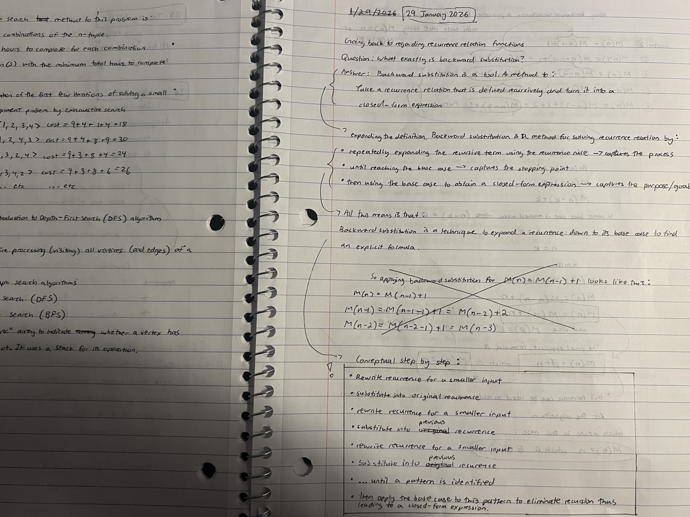
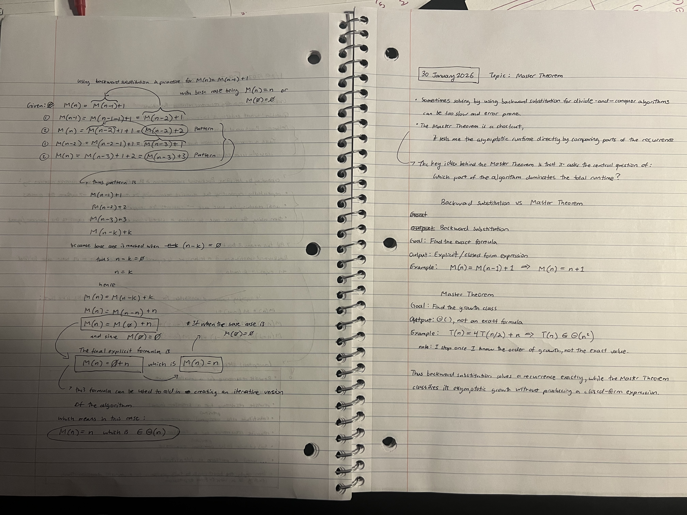

Week 4
( 28 January 2026 ) to ( 3 February 2026 )
Mostly did algorithm practice this week instead of writing in the journal book (e.g. Binary search, matching substring, translate RGB to Hex, etc.). The more I learn and practice algorithms, the worse I feel in feeling "prepared." I believe it is a matter of "the more I get exposed in a topic, the more I recognize how much I do not know." For now I am trying to figure out how to improve and move forward in getting better as I am feeling a bit stuck. I think I am lacking enough techniques in my repertoire to utilize. In addition, I am having a hard time matching and connecting which techniques to apply when given a certain problem. For this reason I am planning to create some form of a "pattern chart" where I list out the most common techniques and compartmentalize problems into smaller sub problem to map out common patterns to recognize.

